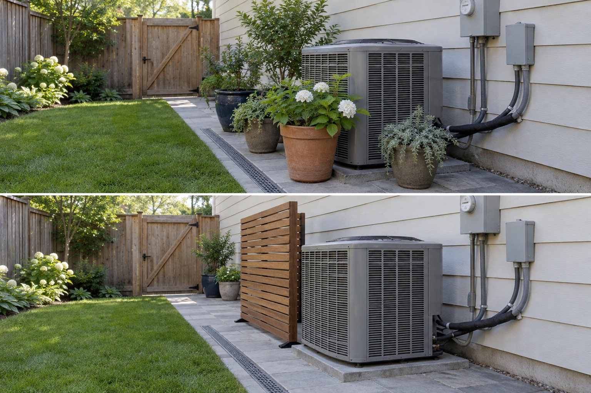

Expose the service face
Keep controls, connections and the route used by a technician unobstructed.
Treat the outdoor unit as working equipment, not a blank object to hide. Identify its air inlets, outlet, connections and service panels from the exact manual, then keep those areas visible and reachable while redirecting only the most important viewing angle.
Editorially reviewed September 10, 2026.
This AI-generated comparison is visual inspiration only. It does not verify dimensions, safety, local rules, products, plants, costs, construction or professional conclusions.

Keep controls, connections and the route used by a technician unobstructed.
Do not wrap the unit with planting or a four-sided decorative enclosure.
Place a removable visual layer to one side only, subject to the exact manual and professional review.
ENERGY STAR ductless guidance prioritizes unobstructed outdoor-unit airflow and warns against tight placement among shrubs or structures. Carrier installation documentation shows that service and connection space is equipment- and installation-specific. These sources frame the decision; they do not certify this pictured layout.
The outdoor unit, pipes, electrical boxes, concrete base, house wall, path, drain, gate, lawn, grade and camera stay unchanged. The image does not certify the screen position or identify the equipment model.
Record the model and locate its current airflow, service, snow, drainage and maintenance instructions.
Photograph panels, valves, pipes, switches and the technician route before placing anything.
Check that irrigation, leaves and soil do not collect around the base or drain.
Test pots or a freestanding screen, then obtain installer approval before fixing anything.
Avoid dense shrubs against the coil, overhead planting, a four-sided box, blocked panels, irrigation spray, hidden electrical equipment, stored tools or copying another model’s clearance.
Stop before attaching a screen, moving the unit, altering pipes or wiring, changing the pad, digging or specifying clearance. Use the exact manual and a qualified HVAC professional.
Only after the exact manual and installer requirements are known. Mature spread, debris, irrigation, airflow and service access all matter.
A one-sided removable visual screen may be testable, but an image cannot confirm position, wind stability, airflow or service clearance.
There is no universal number. Requirements depend on the model, airflow direction, connections, site and local rules.
No. AI can compare appearance but cannot inspect equipment, airflow, electricity, refrigerant lines, drainage or installation.
Upload a level, wide photo that keeps access, drains, boundaries, services and mature features visible.
AI concepts require independent verification of site conditions, safety, local rules and professional requirements before physical work.